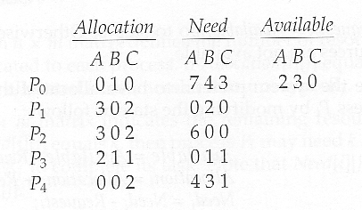

■ Operating System | Banker’s Algorithm Implementation

The banker’s algorithm is a resource allocation and deadlock avoidance algorithm that tests for
safety by simulating the allocation for predetermined maximum possible amounts of all resources,
then makes an “s-state” check to test for possible activities, before deciding whether allocation should be allowed to continue.
• In this assignment -> User are required to input the number of processes, the
number of district resources, the amount of each resource in the system, the maximum
resource claim per process / resource.
The system will then simulate each process using
a thread, and all threads will run concurrently until they have used all the resources they
require, after which they will terminate.
Detailed Description
Q1.code :~
Q2.code ;)